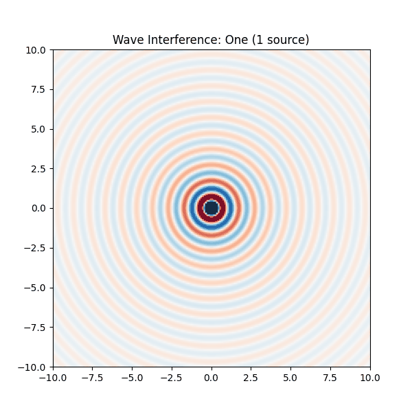
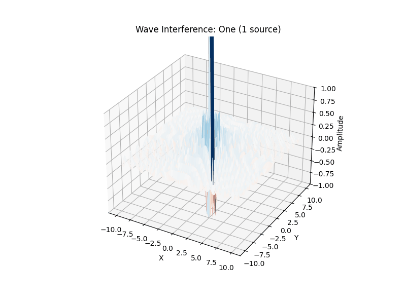

Problem 1
Wave Problem: Interference of Waves from Multiple Sources
Problem statement: - Demonstrate wave interference for one, two, and multiple sources. - Display the result as a heatmap and create an animation. - Source arrangements: - One centered source, - Two along the X-axis, - Three placed in a triangle. - Plot the results and create a gif animation.
Method:
- Wave equation used:
z(x, y, t) = A * sin(k * r - ω * t)
- The contribution from each source is summed.
- Grid from -10 to 10 in both x and y.
- Animation shows wave propagation and interference over time.
Result (animation):


import numpy as np
import matplotlib.pyplot as plt
import matplotlib.animation as animation
# --- Grid Setup ---
size = 200
x = np.linspace(-10, 10, size)
y = np.linspace(-10, 10, size)
X, Y = np.meshgrid(x, y)
# --- Wave Function ---
def wave_source(X, Y, x0, y0, t, wavelength=1, speed=1):
r = np.sqrt((X - x0)**2 + (Y - y0)**2)
k = 2 * np.pi / wavelength
omega = k * speed
return np.sin(k * r - omega * t) / (r + 1e-6) # avoid division by zero
# --- Source Patterns ---
def get_sources(pattern):
if pattern == "one":
return [(0, 0)]
elif pattern == "two":
return [(-3, 0), (3, 0)]
elif pattern == "triangle":
R = 4
angles = np.linspace(0, 2*np.pi, 4)[:-1]
return [(R * np.cos(a), R * np.sin(a)) for a in angles]
elif pattern == "pentagon":
R = 5
angles = np.linspace(0, 2*np.pi, 6)[:-1]
return [(R * np.cos(a), R * np.sin(a)) for a in angles]
patterns = ["one", "two", "triangle", "pentagon"]
# --- Plot Setup ---
fig, ax = plt.subplots(figsize=(6,6))
heatmap = ax.imshow(np.zeros((size, size)), cmap='RdBu', vmin=-1, vmax=1, extent=(-10, 10, -10, 10))
title = ax.set_title("")
# --- Frame Update Function ---
def update(frame):
pattern = patterns[(frame // 20) % len(patterns)]
t = frame % 20
sources = get_sources(pattern)
Z = sum(wave_source(X, Y, sx, sy, t) for sx, sy in sources)
heatmap.set_data(Z)
title.set_text(f"Wave Interference: {pattern.capitalize()} ({len(sources)} source{'s' if len(sources) > 1 else ''})")
return heatmap, title
# --- Create Animation ---
ani = animation.FuncAnimation(fig, update, frames=80, interval=100, blit=False)
# --- Save GIF ---
ani.save("wave_interference.gif", writer="pillow")
plt.close()
print("✅ GIF saved as wave_interference.gif")
- Left plot: one source — circular wavefronts.
- Middle plot: two sources — clear interference pattern.
- Right plot: three sources in a triangle — complex interference structure.
Conclusion: - Orbital trajectories depend critically on initial velocity. - Wave interference clearly demonstrates the principle of superposition: the combination of phase and amplitude when multiple waves interact.